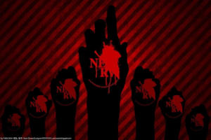
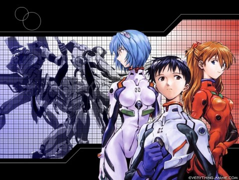

Miembros y Pilotos

Miembros
"Actuar es mucho mejor que esperar un milagro"
Misato Katsuragi
Ella está al mando de las operaciones tácticas en la organización NERV, siendo responsable de coordinar las Unidades Evangelion en combate contra los ángeles, ocupando el cargo de capitán. Más tarde es ascendida al rango de mayor. Es la hija del Dr. Katsuragi y la única sobreviviente del Segundo Impacto.Ritsuko Akagi
Es la principal científica de NERV, siendo la jefa del Departamento de Desarrollo Tecnológico y responsable directa de todo lo relativo con las Unidades Evangelion. Ella es la hija de Naoko Akagi, creadora del sistema MAGI que controla NERV. Dicho sistema está compuesto por tres supercomputadoras (Melchor, Gaspar y Baltasar) que ejecutan todas las operaciones de NERV basándose en una estructura democrática."¿Has oído la historia del "Dilema del Erizo"? Aun cuando quieren calentarse entre ellos, mientras más se acercan, más daño se hacen. Con las personas pasa lo mismo"

"Ahora hay algo que tú puedes hacer, algo que desgraciadamente sólo puedes hacer tú"
Ryoji Kaji
Parece ser un triple agente, que trabaja como inspector especial para NERV, pero secretamente realiza una investigación detallada sobre la organización, cumpliendo la peligrosa tarea de espía encubierto.Gendo Ikari
Es el comandante de la organización militar NERV y el principal impulsor a su creación. También es el jefe del Proyecto E y padre de Shinji Ikari, piloto del Evangelion Unidad 01. Es reconocible por su clásico gesto de juntar las manos (siempre con guantes blancos) por delante de la cara."El mayor temor de la humanidad es la humanidad misma"
Pilotos

"El que se odia a sí mismo, no puede agradar a los demás ni tampoco confiar en nadie"
Rei Ayanami
Es la Primera Niña elegida por el Instituto Marduk, designada como piloto del Evangelion Unidad 00.Asuka Langley Sohryu
Es la Segunda Niña elegida por el Instituto Marduk, designada como piloto del Evangelion Unidad 02."No lo sabrás hasta que lo intentes"
"¡No debo huir!"
Shinji Ikari
Es el Tercer Niño piloto designado del Evangelion Unidad 01. Es hijo de la bioingeniera Yui Ikari y del jefe de la organización NERV, Gendo Ikari. Después de la muerte de su madre, fue abandonado por su padre y vivió durante 11 años con su sensei, hasta que fue llamado a Tokio-3 para pilotar la Unidad-01 y enfrentar a los ángeles. Vive inicialmente con Misato Katsuragi, aunque más tarde se une a ellos Asuka Langley Sohryu.Kaworu Nagisa
Es el Quinto Niño elegido, enviado a NERV por SEELE como piloto de reemplazo del Evangelion Unidad 02"El destino de la humanidad, la esperanza está hilada con el sufrimiento"